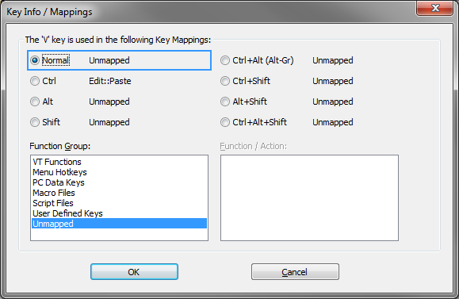

The Keyboard Options dialog is used to map BlueZone VT
program functions to key sequences on the keyboard and to control
various keyboard related options.
Key Mappings tab
Note: If you have
installed a non-English version of BlueZone, the default keyboard
map that displays is based on your currently selected language in
the Regional and Language Options in Windows.
- Gray keys
- Gray keys can be mapped. If you click a gray key, the Key Info/Mappings
window opens and lists all of the key mappings for each function group.
It also lists any combination key mappings that this key is used in.
The
following figure shows the associated mappings with the V key. The
Ctrl key is mapped to the Edit::PasteMenu Hotkeys. All of the other
available mappings are unmapped.
Figure 1. BlueZone VT key mappings information

- Red keys
- Red keys cannot be used to map BlueZone VT Functions.
- Yellow keys
- Yellow keys are caution keys. Care should be taken when using
the yellow keys to map BlueZone VT Functions. The caution keys include
the Alt keys and the Esc key. Windows uses the Alt keys with menu
accelerators and the Esc key is mapped to Esc.
- Options
- Keyboard Functions Group: Lists the various
groups of keyboard functions that are available for keyboard mapping.
- VT Functions: Lists VT Terminal related functions such as the Function
Keys, Answerback, PF1 through PF4, Find, Insert, Remove, Select, Previous Screen, Next
Screen, Hold, et cetera that are available for key mapping.
- Menu Hotkeys: Lists the BlueZone menu items
available for key mapping.
- PC Data Keys: Lists the PC Keyboard Keys
available for key mapping, like Broken Vertical Bar, Degree Sign,
Plus Sign, Minus Sign, Euro Currency Symbol, and so on.
- Macro Files: Lists the macro files available
for key mapping. BlueZone macro files are created by selecting from
the BlueZone menu bar.
Note: Only macro files from the BlueZone program
directory are listed for selection.
- Script Files: Lists the script files available
for key mapping. BlueZone script files are created by selecting from the BlueZone menu bar.
Note: Only script files
from the BlueZone program directory are listed for selection.
- User Defined Keys: Lists the fifteen user defined keys available for
mapping. User 6 through User 20.
- Send Keys: Used to send a combination of VT
Keys and Text to the host by mapping it to a key combination.
Note: By default there are no
defined Send Keys. Press the green + to add a new string. The same
string can be mapped to multiple key combinations. Press the gear button to edit an
existing string. Press the X button to delete the selected string
and all key mappings to that string.
- Functions: Lists the various functions
available for key mapping. The functions displayed are dependent
on which function is selected in the Keyboard Functions
Group list box.
- Key Mappings: Lists the key mapping or
mappings if any, that execute the highlighted function in the Functions list
box.
- Key Mappings Buttons
-
Escape Sequences tab
The Escape
Sequences tab is used to view or change the default BlueZone
VT escape sequences that are associated with certain BlueZone VT keys
like Function Keys, Backspace, Arrow Keys, and so on.
- VT Functions
- The VT Functions group is used to set or reset an ASCII escape
sequence for any VT function:
- Overwrite Function: Enable this check box,
if you want to edit or create a custom escape sequence for a particular
VT key or command.
- Escape Sequence: This field is used to
edit or create a custom escape sequence for the selected VT function.
The syntax requires a back-slash ( \ ) then a two digit hexadecimal
number. For example, \1B is the value for Escape
(ESC). Multiple items are simply typed in as a continuous string
with no spaces. For example, the function key F13 has the following
escape sequence \1B\5B\32\35\7E.
Additional Options tab
The Additional
Options tab controls the behavior of the backspace, arrow,
and number pad functions.
- Send Backspace as
- There are two choices for the behavior of the backspace function:
- Backspace / Non-Destructive (08h): Causes
the cursor to move to the left without deleting any characters.
- Delete / Destructive (7Fh): Causes the
cursor to move to the left and deletes any characters it encounters.
- Cursor Keys
- Controls the behavior of the arrow key functions.
Host Controlled: The host sets the cursor
keypad mode and controls the escape sequence that the arrow keys send.
Normal: Sends the application and numeric
control sequences to the host.
Application: Sends only the application
control sequence to the host.
- Keypad Mode
- Controls the behavior of the numeric keypad functions.
Host Controlled: The host sets the numeric
keypad mode and controls the escape sequence that the numeric keypad
keys send.
Numeric: Sends only the numeric control
sequence to the host. When Numeric is selected, Num displays
in the status bar.
Application: Sends only the application
control sequence to the host. When Application is
selected, App displays in the status bar.
- Keyboard Inactivity Timer
- If enabled, the user can adjust how many minutes of inactivity need to pass before the
session disconnects (maximum of 999 minutes). If this feature is disabled, the session
disconnects after the default amount of time set by the system administrator in the
global.ini file.
Tips
- NumLock Key
- Pressing the NumLock key in a BlueZone VT session does not change the NumLock state when
using the following terminals:
- Linux
- SCO-ANSI
- VT52 (or higher)
To toggle the NumLock state when using these terminals, press Shift+NumLock key.